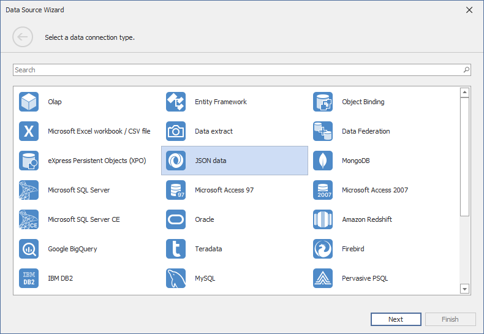
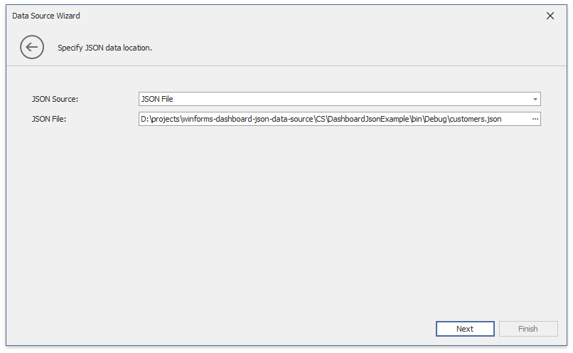
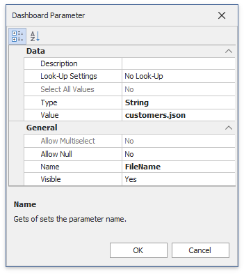

Binding to JSON Data Sources
The Dashboard Designer allows you to connect to the JSON data source that retrieves data from a Web-service endpoint, text file or a string in JSON format.
Create a New Data Connection
Follow the steps below to connect to the JSON data source:
Click the New Data Source button in the Data Source ribbon tab.

On the first page of the invoked Data Source Wizard dialog, select JSON data and click Next.

Configure a New Data Connection
On the next page, configure a new data connection.

JSON String
Specify a string that contains JSON data.

Click Next to proceed to the Select Data Fields page.
JSON File
Specify the JSON data location to load content from the selected JSON file.

Click Next to proceed to the Select Data Fields page.
Web Service Endpoint (URI)
Specify a URL to a file in JSON format and the Web Service Endpoint's request parameters (username and password, HTTP headers, query parameters or URI path parameters).
- A path parameter appends a path element to a JSON endpoint's Uri.
- A query parameter specifies an HTTP request parameter that is passed to a JSON endpoint.
- A header is a custom HTTP header in JSON endpoint requests.
You can use expressions and dashboard parameters to set path parameters, query parameter values and headers. Click the "+" icon to create a new parameter, enable the new parameter's Expression property and select Expression Editor from the Value property's drop-down list.

Specify the expression in the invoked Expression Editor and click OK.

An expression can include dashboard parameters.
Tip
Refer to the following help topic for details on how to create a dashboard parameter: Create Parameters.
Select Add Dashboard Parameter from the Value property's drop-down list, configure the dashboard parameter in the invoked Dashboard Parameter dialog, and click OK.

Path parameters and query parameters are included in endpoint requests in the order in which they are listed. Move a parameter up or down the list to change its position within an endpoint request.
The read-only Resulting URI field displays the result: a JSON URI.

Click Next to configure basic HTTP authentication credentials and specify HTTP Header parameters.

Click Next to proceed to the Select Data Fields page.
Select Data Fields
The "Select data fields" page allows you to include or exclude data fields used in a JSON data source.

Click Finish to create a JSON data source.